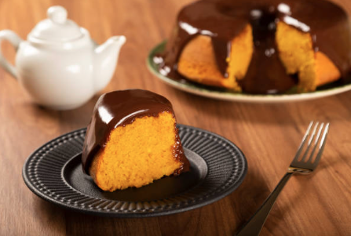

Receita: Bolo de Cenoura

Ingredientes
Massa:
- 3 cenouras médias (cerca de 300 gramas)
- 3 ovos
- 1 xícaras (chá) de óleo
- 2 xícaras (chá) de açúcar
- 2 xíxaras (chá) de farinha de trigo
- 1 colher(sopa) de fermento em pó
Cobertura de Chocolate
- 4 colheres (sopa) de chocolate em pó ou cacau 50%
- 4 colheres (sopa) de açúcar
- 1 colher (sopa) de manteiga
- 3 colheres (sopa) de leite
Modo de Preparo
- Bolo:
- No liquidificador, bata as cenouras, ovos e óleo até ficar homogêneo.
- Em uma tigela, misture o açúcar e a farinha, depois adicione a mistura no liquidificador.
- Por último, adicione o fermento e mexa delicadamente.
- Despeje em uma forma untada e enfarinhada e leve ao forno pré aquecido em 180ºC por aproximadamente 40 minutos.
- Cobertura:
- Em uma panela, misture todos os ingredientes e leve em fogo baixo até engrossar, mexendo sem parar.
- despeje sobre o bolo ainda quente e espalhe com uma espatula.